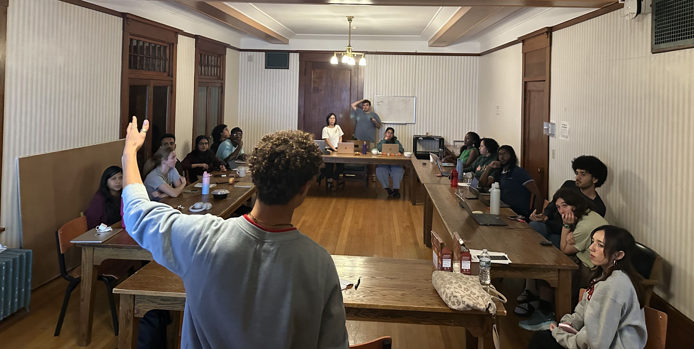
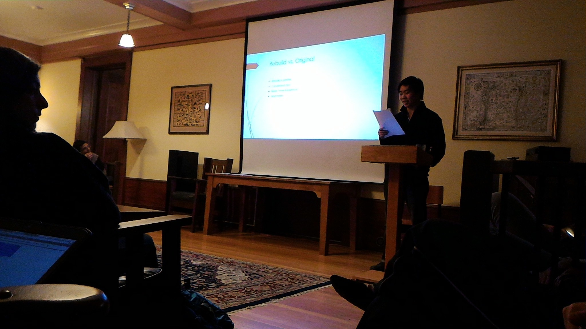

Life at the House
Life at Telluride House is more than just a place to live—it is a vibrant intellectual and social community. Members govern themselves, share responsibilities, and build lifelong friendships through traditions, debates, meals, and collaborative projects. Here are some of the key aspects of daily life in the House.
Weekly House Meetings
House meetings typically run for 2.5 hours and cover issues pertinent to the house, from visiting guests to budgeting for social events. Discussions follow a version of Robert’s Rules outlined in our governing documents.
Committees
Each member joins at least one primary and one secondary committee. The goal is for each member to dabble in different committees, leaving the house feeling capable of taking on any role.
Primary Committees
- Advisory (oversee all other committees)
- Orientation
- Treasurers
- Chairs (run house meetings)
- Secretary
- Tech
- Employee Coordinators
- Preferrment
- Academic Affairs
- Residential and Guest
- End-of-Year
Secondary Committees
- Health Liaisons
- House and Grounds
- Custodianship
- Social & Internal Community Building
- Telluride Association Summer Session
- Outreach
- Cornell Branch Committee Liaison
- Deep Springs Liaison
- Michigan Branch (MBTA) Liaison
- Cornell Relations Working Group Liaison
Rooms & Common Areas
Members live in single or double rooms with Jack-and-Jill restrooms. Common areas include a dining room, game room, gym, porch, library, living room, second-floor lounge, and balconies. Maintenance requests are handled through a shared system.

Meals
Lunch and dinner are served daily in the kitchen. Meals cater to diverse needs, including vegan, vegetarian, and gluten-free diets. On cultural occasions, chefs prepare special dishes, sometimes with the help of members.

PubSpeaks
Each member gives an hour-long presentation each year on a topic of their choice—ranging from music and theory to labor history or the physics of self-driving cars.
Guests
The House frequently hosts visiting professors, artists, and community members. Guests engage with members during meals, in common spaces, and through scheduled programming. Requests to stay at the guest house can be made through the booking platform.